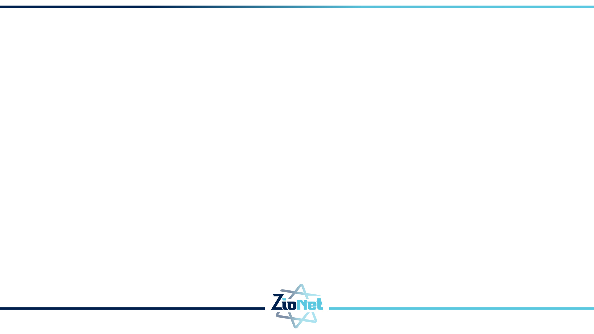

ZIONET · Домашнее задание
Eval-проверка сценария кошерности

Суть задачи
Создать набор eval-тестов, которые оценивают работу языковой модели в сценарии определения кошерности.
Как запустить сценарий кошерности
Выполняйте команды из корня репозитория MeetingFlow. Для запуска нужен
.NET SDK версии 10.x.
1. Проверьте среду и восстановите зависимости
dotnet --version
dotnet restore .\MeetingFlow.Monolith\MeetingFlow.Monolith.csproj2. Настройте модель
Для одного запуска выберите один набор переменных. Ключ доступа не сохраняйте в файлах проекта и не добавляйте в Git.
OpenAI
$env:AiChat__Model = 'gpt-5-mini'
$env:AiChat__Endpoint = 'https://api.openai.com/v1'
$env:AiChat__ApiKey = '<OPENAI_API_KEY>'Ключ можно создать на странице ключей OpenAI.
Groq (бесплатная версия)
$env:AiChat__Model = 'openai/gpt-oss-20b'
$env:AiChat__Endpoint = 'https://api.groq.com/openai/v1'
$env:AiChat__ApiKey = '<GROQ_API_KEY>'Ключ можно создать на странице ключей Groq. Для бесплатной версии действуют ограничения на количество запросов. Приложению нужна модель с поддержкой JSON Schema.
Подходящие модели Groq:
openai/gpt-oss-20b- быстрый основной вариант.openai/gpt-oss-120b- более крупная модель для сложных случаев.-
qwen/qwen3.8-27b- альтернативная модель в режиме предварительного доступа; она может быть заменена или отключена.
3. Запустите монолит
dotnet run --project .\MeetingFlow.Monolith\MeetingFlow.Monolith.csproj
Откройте http://localhost:5000/KosherCheck.
Отдельный клиентский процесс запускать не нужно. Для остановки нажмите Ctrl+C.
Если возникла ошибка
401- проверьте ключ и выбранного поставщика.429- достигнут предел запросов; подождите и повторите попытку.503- переменнаяAiChat__ApiKeyне задана.- Ошибка схемы - выберите модель с поддержкой JSON Schema.
Код серверной реализации сценария кошерности находится
в сервисе OpenAiKosherAssessmentService
.
Что обязательно должна включать работа
- Набор входных случаев. Добавьте минимум 5 сценариев проверки (рекомендуется 20), вынесенных из кода запуска в отдельные данные, чтобы новые сценарии можно было добавлять без изменения основной логики.
- Детерминированная проверка кодом. Добавьте хотя бы одну проверку без языковой модели: например, проверьте формат ответа, обязательные поля, допустимые статусы или количество результатов.
- Оценка при помощи языковой модели. Для каждого случая получите ответ проверяемой модели и передайте его как минимум одному судье на основе языковой модели. Судья должен вернуть оценку, признак успешного прохождения и короткое объяснение решения в структурированном виде.
- Минимальный отчет. После запуска создайте файл с общей сводкой и результатом каждого случая.
- Краткая инструкция по запуску. Перечислите реальные имена переменных окружения для ключа доступа, проверяемой модели и модели-судьи. Покажите одну готовую команду запуска и укажите, где появится отчет.
Какие случаи можно включить
- Простой случай, где всё выглядит допустимо, но всё равно нужен вопрос про сертификат.
- Случай с мясным и молочным вместе.
- Случай с неизвестным составом или неясной добавкой.
- Случай с общей посудой или общей линией производства.
- Случай с попыткой уговорить модель игнорировать правила или не задавать вопросы.
Что должен делать судья
Судья на основе языковой модели получает исходный случай, ответ проверяемой модели и правила оценки. Он возвращает оценку по критериям и короткое объяснение.
Пример формы результата от судьи:
{
"caseId": "milk-meat-001",
"score": 4,
"maxScore": 5,
"passed": true,
"reasons": [
"модель заметила смешение мясного и молочного",
"модель не выдала окончательное постановление",
"модель попросила уточнить состав и способ приготовления"
]
}Минимальный отчет
После запуска должен появиться файл отчета, например eval-report.md,
eval-report.json или eval-report.html.
В отчете должно быть хотя бы:
- дата запуска;
- какая модель проверялась;
- сколько случаев прошло проверку;
- средняя оценка;
- таблица или список результатов по каждому случаю;
- короткий вывод: что модель делает хорошо и где ошибается.
Как сдать домашнее задание
Для сдачи домашнего задания заполните эту форму.
Срок сдачи: 4 сентября, 23:59.